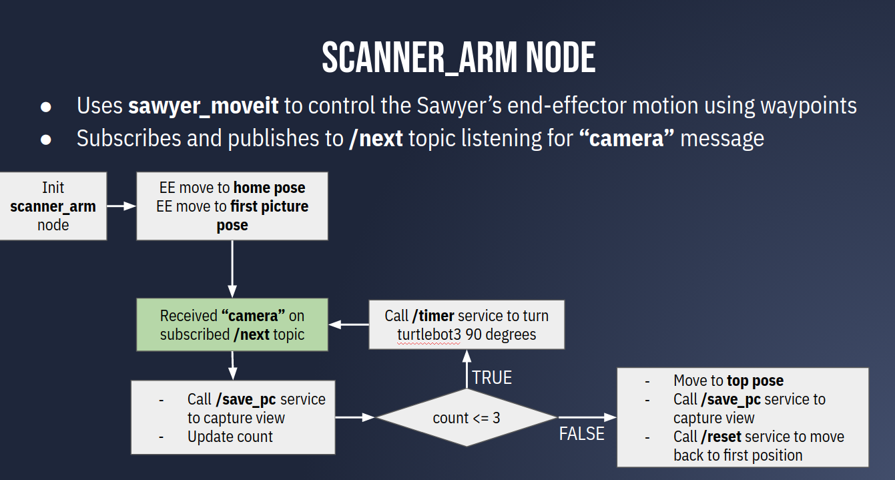
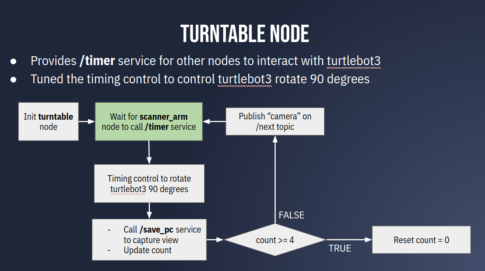

Automated 3D Modeling
key tools: ROS, MoveIt!, Slam_toolbox, Point Cloud Library
Github LinkProject goal:
The goal of our project is to create a 3D reconstruction model of an arbitrarily object. We aimed to design an automated 3D reconstruction system to make people without any CAD modeling experience can construct 3D detailed model from objects.
Because of Covid, we have limited time spent in lab. We have our refined version of point clouds finished at home. Thanks for Tianyu Li, my teammate, did this.
My major work:
- responsible for sawyer and turtlebot motion part
- come up ideas for scanning method and possible waypoints of scanning positions
- create arm_motion package and use MoveIt to generate an efficient trajectory for sawyer movement
- make turtlebot3 and sawyer can cooperate with each other and be an automate moving system
- store the point cloud data using realsense camera
Demo in the lab:
Refined demo at home(done by Tianyu Li)
Robots used to complete the goal:
- Rethink Sawyer Arm
- Intel Realsense camera
- Turtlebot3(burger)
General process:
We mounted realsense camera at the end effector of the sawyer. This realsense camera is used to record the point cloud data for five sides of the object(front, left, right, back and up). The sawyer arm is to control the position of the camera, so that it can directly face the target surface. The turtlebot3 works as a turntable to make object spin. Generally, the sawyer arm needs to move to a certain position (stored waypoint), then turtlebot3 turn 90 degrees each time and camera store point cloud data each time. After finishing storing the four sides, sawyer will go to the second stored waypoints to capture the top view of the object.
Skills need:
- Robot Operating System
- Sawyer and turtlebot3(burger) user connection
- Slam\_toolbox
- Move\_base
- Moveit
- Opencv
- Point Cloud Library (PCL)
We divide the project into three sections, corresponding with three ROS packages:
arm_motion:
- This package responsible for the control of motion between sawyer robot and turtlebot3
- MoveIt is used to manipulate the motion of sawyer arm
- Slam\_toolbox and move\_base are used to turn turtlebot3
camera_motion:
- Aligning the camera
- Processing the raw depth pixels by OpenCV
 
Camera_reconstruct:
- Point Cloud Library is used to process points cloud data stored in realsense camera
- Use C++ to post-process the data including transformation, alignment and cropping
Result